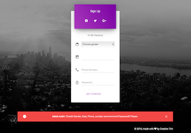
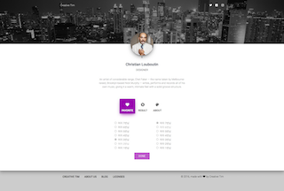

DUHWAN JANG
Programming is 如切如磋 如琢如磨
Hi, my name is DuHwan Jang. I’m a software developer from Korea Who loves to write software to build great products and help businesses succeed with their goals. I love my work and want to contribute to this industry. So, I follow software craftsmanship. I believe that we could change the world and solve the problem in the world. If you believe that please contact me. I want to work with you.
PERSONAL INFORMATION
- Name
- DuHwan Jang
- Born
- 7/5/1986
- Birthplace
- Korea
- Language
- Korean, English
- Manifesto
- Software Craftsmanship
동작하는 소프트웨어 뿐만 아니라, 정교하고 솜씨있게 만들어진 작품을
변화에 대응하는 것뿐만 아니라, 계속해서 가치를 더하는 것을
개별적으로 협력하는 것뿐만 아니라, 프로페셔널 커뮤니티를 조정하는 것을
고객과 협업하는 것뿐만 아니라, 생산적인 동반자 관계를
CONTACT INFORMATION
- Mobile
- 010-2524-9037
- e.where.people.enjoy@gmail.com
- SNS
- Kakao talk ID : Soondingee
- Facebook : e.where.people.enjoy@gmail.com
- Blog
Purpose Drive Development
Anything I can do.
생각한 것을 실현하고 가장 빠르게 확인 할 수 있는 강력한 도구
많은 사람들에게 많은 영향력을 끼칠 수 있다는 것
프로그래밍은 이제까지 한 일들 중에 가장 즐거운 일입니다.
Make the World Better
사람들의 삶의 양식을 변화시키고
세상을 지금보다 더 합리적으로 만들고 싶습니다
가장 강력하고 확실한 방법은 프로그래밍이라고 생각합니다.
Definite Performance.
코드와 관련된 일이 아니라도 프로젝트의 성공을 전적으로 돕습니다
혼자 사업을 기획부터 개발까지 수행한 사업이 2017년 기준으로 7억 원입니다
사용한 언어는 C#, JAVA, ANDROID까지 다양합니다
필요하면 빠르게 학습하고 주어진 목표를 달성합니다.
Knowledge sharing
서로를 더 성장시킬 만한 사람들과 함께 일하길 원합니다
사내에서 알고리즘, 자료구조, 디자인 패턴 관련한 스터디 그룹을 만들고 이끌었습니다
덕분에 개발 소스 코드의 품질이 올라가고 활발한 의사소통으로 과제를 원활하게 수행했습니다.
What I Do
Programming Language
- JAVA, C# - 가장 많이 사용
- Kotiln, Python, Type Script - 학습중
- JavaScript(Node.js), Ruby - 접해본적 있음
- Scala, Haskell- 공부해보고 싶음
Framework
- Android, Winform(.NET 4.0) - 가장 많이 사용
- Kotiln(Android), Django - 학습중
- Spring, Ionic, Node.js - 접해본적 있음
- Machine Learning - 공부해보고 싶음
OS
- Windows, Mac
DataBase
- MSSQL, ORACLE
Others
- Git, TeamFoundation
- Docker, AWS
- TDD(Test Driven Development)
- Coding Convention(pep8)
Education Qualification
- KNU(경북대학교) - 2005. 03 ~ 2009. 02
- Landscape Architect
- Global Human Resource Development Institute - 2014. 01 ~ 2014. 08
- 사물인터넷(IOT)기반 응용소프트웨어 제작
Personal Projects
I feel connect with you (연결) - 현재운영중
- Content : This App to vote for a favorite person after a meeting.
- Skill : Python, Django, Sqlite3
- URL : 연결 - Connet Web site.
- Github Source : Git hub source
- Screen Shot

Company Projects
영진글로지텍 솔루션 사업부 - 2014. 11 ~ 2017. 07
구매조건부(해양환경 모니터링) - 2016. 11 ~ 2018. 10
- Content : 육지에서 1km 이상 떨어진 전기가 공급되지 않는 양식장의 수온과 용존산소량을 측정하고 데이터를 휴대폰이나 웹으로 볼 수 있는 시스템, 부표에 센서 장비와 태양광을 설치하여 센서 데이터 실시간 전송.
- Roll : PL(Project Leader), Devops
- Skill : C#, WinForm, .Net Framework, Java, Android, Spring, HTML, CSS, Javascript
Oyster Farming Management System - 2015. 03 ~ 2017. 06
- Content : 굴 박신자(굴을 채취하여 가공하는 공장)에 RFID 기술을 결합하여 작업자들의 생산품과 공정을 전체적으로 관리하는 시스템.
- Roll : Devops
- Skill : C#, WinForm, .Net Framework, MSSQL
산학연(센서 컨트롤러 및 측정장치 개발) - 2016. 09 ~ 2017. 09
- Content : 센서 데이터 측정하고 측정된 데이터를 육상으로 보낼 수 있는 시스템 개발.
- Roll : PL(Project Leader)
- Skill : C#, WinForm, .Net Framework, Java, Android, Spring, HTML, CSS, Javascript
RFID 기반 창고관리 시스템 - 2016. 03 ~ 2017. 05
- Content : RFID를 이용한 저장고 입출입 관리 시스템
- Roll : PL(Project Leader)
- Skill : Java, Android, Spring, C#, WinForm, .Net Framework, MSSQL
SW융합(Oyster Manufacturing Execution System) - 2016. 03 ~ 2017. 09
- Content : 국내 최대 굴 수출업체를 전체적으로 관리하는 시스템
- Roll : Team Manager
- Skill : C#, .NET Framework, JAVA, Android, MSSQL, RFID Reader
u-IT기반 양식장 통합정보관리시스템 기능개선 사업 - 2016. 05 ~ 2016. 07
- Content : 국내 양식장의 통합정보관리 시스템 기능 개선
- Roll : PM, Devops
- Skill : JAVA, Android, Spring Framework, Cordova, Java Script, HTML, CSS
I-oT기반 가두리 수산물 생장/생육 관리시스템 개발 - 2015. 08 ~ 2016. 02
- Content : 관리자 시스템 개발
- Roll : PL(Project Leader)
- Skill : JAVA, Spring Framework, Java Script, HTML, CSS
중소기업 융합R&D현장기획 지원 - 2015. 04 ~ 2016. 08
- Content : 첨단 양식장 기획 및 시스템 설계 (기획에 참여)
- Roll : Developer
- Skill : Word, HWP
어패류 복합양식빌딩 구축을 위한 생장/생육 통합관리 기술개발 - 2014. 11 ~ 2015. 02
- Content : 도심 내 빌딩형 복합양식장 R&D 사업 (빌딩형 양식장 생장 생육 관리 시스템 개발)
- Roll : Developer
- Skill : C#, Winform, MSSQL
스마트기반 굴박신장 생산지원관리 시스템 - 2014. 11 ~ 2015. 08
- Content : RFID를 이용한 굴 박신장 생산지원관리 시스템 개발
- Roll : Developer
- Skill : C#, Winform, MSSQL